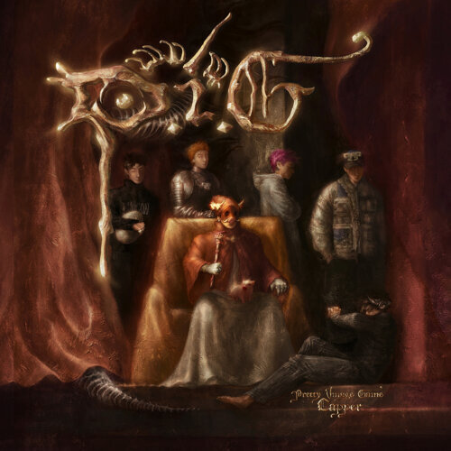
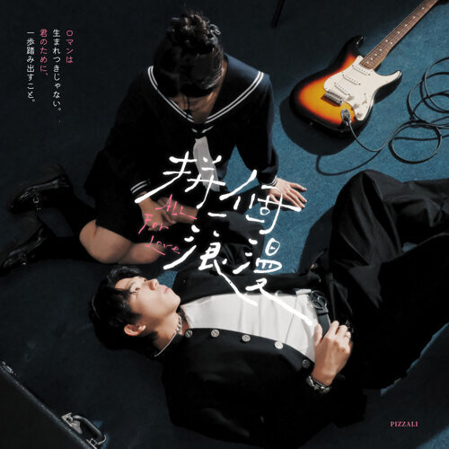

何苡嫙 Sharon
世新大學大一，認真過生活，認真賺錢，認真花錢，認真打麻將。
我在世新大學大一，生活主要是認真過日子：認真上課、認真賺錢、也認真花錢，偶爾再來幾場麻將放鬆一下。平常會打工，讓自己有點經濟自由，想吃想買不用太猶豫。個性隨和不難相處，朋友約幾乎都會到，該玩的不缺席，該做的也會做好。現在還在慢慢找未來方向，但不急，先把每天過得開心又踏實最重要。
選擇世新大學資訊傳播學系，是希望能學習與數位媒體相關的技能，包含設計、內容創作與網路應用，讓自己未來有更多發展方向。
| 科目 | 喜歡程度 | 單元 | 分數 |
|---|---|---|---|
| 國文 | 散文 | 6 | |
| 英文 | 全部 | 2 | |
| 數學 | 全部 | 10 | |
| 自然 | 物理 | 1 | |
| 社會 | 地理 | 6 |
Capitalize on low hanging fruit to identify a ballpark value added activity to beta test. Override the digital divide with additional clickthroughs from DevOps. Nanotechnology immersion along the information highway will close the loop on focusing solely on the bottom line.
| 工作 | 時間 | 內容 |
|---|---|---|
| 麻古茶坊 | 高一～高三上 | 麻古是我第一份工作，我從高一做到高三上， 因為要學測所以離職，是我第一次接觸到餐飲業。 |
| 拾汣茶屋 | 高三～現在（寒暑假） | 我高三學測完後進去上班，這間是我最喜歡的一間， 我在裡面交到了很多好朋友，跟同事也都相處得很好， 因為這間在台中，所以我上大學後固定回去上寒暑假的正職。 |
| 得正 | 大一下學期 | 大一下學期的時候去上的，我覺得這是我上過最累的班， 每天都爆單，而且飲料超級難背，所以我做一個多月就離職了。 |
我從高中就很喜歡聽他的歌，每一場專場都會去， 只要他有演出我能到的基本上都不會缺席！
這是我最近蠻喜歡的一位大陸饒舌歌手， 我在抖音上滑到他，覺得他很帥，歌也很好聽。
我從很小的時候就開始聽他的歌， 每一首歌我都很喜歡，希望有機會可以去他的演唱會。


你也可以在這些社群媒體找到我